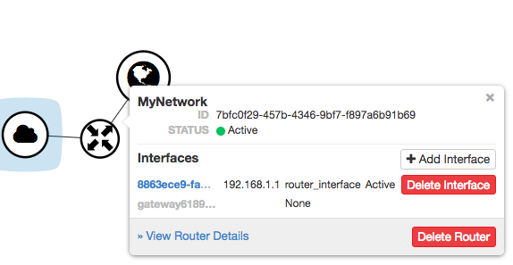

By default, bare metal nodes on each Chameleon site share the same local network (shared VLAN and IP subnet). However, some experiments may require more network isolation, which is now supported by Chameleon.
Chameleon’s implementation of network isolation is based on dynamically managed VLANs (network layer 2) associated with user-configured private IP subnets (network layer 3). This means that all network communications local to the IP subnet or the broadcast domain (such as Ethernet broadcast, ARP, IP broadcast, DHCP, etc.) will be restricted to the user-configured network and its associated VLAN. This feature enables a range of experiments in networking and security. For example, this allows running your own DHCP server to configure virtual machines running on bare metal nodes, without impacting other users.
Note
Strong network isolation is provided at network layer 2 only. Even using separate IP subnetworks, any bare metal node can still communicate with each other and with the Internet through the network’s router. We are investigating solutions to provide stronger isolation at network layer 3.
Network isolation works on all nodes, including our low-power HP Moonshot nodes (low-power Xeon, Atom, ARM64).
To use this feature, you will need to create a dedicated network and router. You can use a Heat template, use the Network panel of the GUI, or use the CLI.
In Create Network dialog, name your network. In general, you will also want to create a Subnet for your new Network, so make sure you have Create Subnet checked. Click the Next button.
When creating a Subnet, you must specify a Subnet Name and a CIDRNetwork Address that contains a private IP address and a subnet mask length. For example, you may create a Class C subnet with a 24-bit mask by entering 192.168.1.0/24. You may set a Gateway or leave it blank to use the default. Then, click the Next button.
You may specify DHCP and static Route information at Subnet Details section:
Allocation Pools section allows you to specify DHCP address ranges in the format of <firstaddress>,<lastaddress>. For example, entering 192.168.1.2,192.168.1.100 will create a Subnet with IP ranges from 192.168.1.2 to 192.168.1.100.
DNS Name Servers section allows you to specify a list of DNS servers.
Note
At CHI@TACC, use 129.114.97.1 and 129.114.97.2 for your DNS servers
At CHI@UC, use 8.8.8.8 and 8.8.4.4 for your DNS servers
Host Routes section allows you to specify static routing information for the subnet in the format of <subnetCIDR>,<routerIPaddress>. For example, 192.168.3.0/24,10.56.1.254 means all traffic from this Subnet to 192.168.3.0 will be forwarded to the Router Interface at 10.56.1.254.
Note
All three sections above are line separated.
Click Create button and a new Network will be created. Check if the network is created without error.
In this dialog, specify a Router Name. Optionally, you may select public as the External Network if you want to have external access. Click Create Router to complete the process.
A Router may have multiple Interfaces, each connected to a Network. You may add an Interface to an existing Router by clicking on Add Interface from either the Network Topology page or the Routers page to open the Add Interface dialog.

The Router interface in the Network Topology page
First, select a network and subnet you have created. You can specify an IP address; otherwise, Chameleon will attempt to assign an IP address automatically. The gateway IP you assigned to the subnet will be automatically picked.
Network objects such as Routers and Networks must be deleted in the reverse order of which they were created. Objects can not be deleted while other objects are depending on them.
Attention
Before starting to delete network objects, make sure all instances using them are terminated!
Go to Project > Network > Routers, and click on the router you would like to delete.
Go to Static Routes tab, and click on the Delete Static Routes button in the Action column. The Static Routes will be deleted after confirm.
Go to Instances tab, delete the Gateway interface by clicking on Delete Interface button in the Action column and confirm the deletion.
Now you can safely delete the router by clicking on the dropdown on the upper right corner. Then, click on Delete Router. Finally, confirm your deletion of the router.
Go to Project > Network > Networks, and delete the network by using the dropdown in the Action column. Alternatively, you may delete the network by selecting the network using the checkbox and click on Delete Networks button on the upper right corner. Confirm your deletion to finish the process.
Note the provider:segmentation_id field in the above output. Each Isolated
VLAN Network requires a unique network segment to operate. There are a finite
number of valid network segments on Chameleon. If you are unable to create a
network because there are no valid network segments available, then you can
create a network automatically by Creating a Lease to Reserve a VLAN Segment.
Once you have created a Network, you may create a subnet with the command: